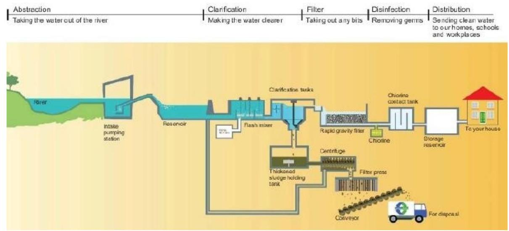

Utility Services (Water Supply & Treatment)
UTILITY SERVICES IN BUILDINGS
Water supply system encompasses of a combination of pumps, pipes (of different dimensions and materials), valves and outlets that deliver water to building users.
Water supply is the act of Providing Water to the Individuals, Group of people, Institutions, Commercial organization or for irrigation by a system of pumps or pipes.
Water distribution system is the physical infrastructural works that deliver sufficient water quantity and quality water from the water source to the intended end point or user. Water distribution is achieved by way of pumps and motors, watermains, service pipes, storage tanks or reservoirs, and related equipment, in a closed system under pressure.
Water Distribution methods include pumping method, Gravity method.
Sources of water
- Ground Water:
- Deep or artesian wells.
- Springs.
- Surface Water -
- Rainwater.
- Rivers and lakes.
- Surface wells.
- Sea Water.
- Other Resources -
- Snow
- Artificial Rain
- Deep artesian wells furnish pure water as a rule, unless the piping is not tightly jointed, when impure water from a subsoil stream near the surface may enter the pipes.
- Springs are a source of pure water supply if they are not contaminated by passing through soil which is polluted.
- Rain water takes up the dust and gases from the air, and organic matter from the roofs over which it is collected- causing the water to be unsafe for drinking purposes.
- Rivers and lakes are a common source of water supply, but they may be made very unfit for drinking if the surface water and sewage from towns and cities is allowed to drain into them.
- Surface wells are a very unsafe source of drinking water supply, and the water should never be used when there are cesspools, drains, barnyards, or any other Sources of contamination within a radius of 200 feet of them.
Water treatment
Purification or Treatment of water is a mandatory requirement of civic authority to supply potable water, safe water, free from all the impurities.
There are Mainly three types of water impurities
- Physical Impurities: turbidity, colour, taste, odour
- Chemical Impurity: hardness
- Bacteriological impurities: pathogenic bacteria.
- Clarification
Pre-treatment - (Screening, Storage, Preconditioning, Pre-chlorination)
- Pumping and containment - The majority of water must be pumped from its source to tanks.
- Screening - remove large debris such as sticks, leaves, trash and other large particles.
- Storage - water will be store for weeks or months to natural biological purification called aeration.
- Pre-conditioning - Water rich in hardness salts is treated with soda-ash.
- Pre-chlorination - incoming water was chlorinated to minimize the growth of fouling organisms on the pipe-work and tanks
pH adjustment
- Distilled water has a pH of 7 (neither alkaline nor acidic)
- If the water is acidic (lower than 7), lime, soda ash, or sodium hydroxide is added to raise the pH
- Making the water slightly alkaline ensures that coagulation and flocculation processes work effectively and also helps to minimize the risk of lead being dissolved from lead pipes and lead solder in pipe fittings
- Flocculation/Cogulation
Flocculation is a process which clarifies the water. Clarifying means removing any turbidity or colour so that the water is clear and
9|Page
- Sedimentation: It is a large tank with slow flow, allowing flocculation to settle to the bottom. Sedimentation basins may be rectangular, where water flows from end to end, or circular where flow is from the centre outward.
- Disinfection
- Finally bacteriological impurities to be removed before distribution either by adding chlorine or ozone or ultra violet radiation. Reverse Osmosis (RO) system may be used for purification, or water could be boiled or purified by water purifier.
- Reverse osmosis: Mechanical pressure is applied to an impure solution to force
NOTE:
Desalination:
- Sea water is saline. Even if the salinity is variable for various oceans the water is unfit for drinking.
- Desalination is an artificial process by which saline water is converted to fresh water.
STAGES OF WATER TREATMENT:
Water treatment
